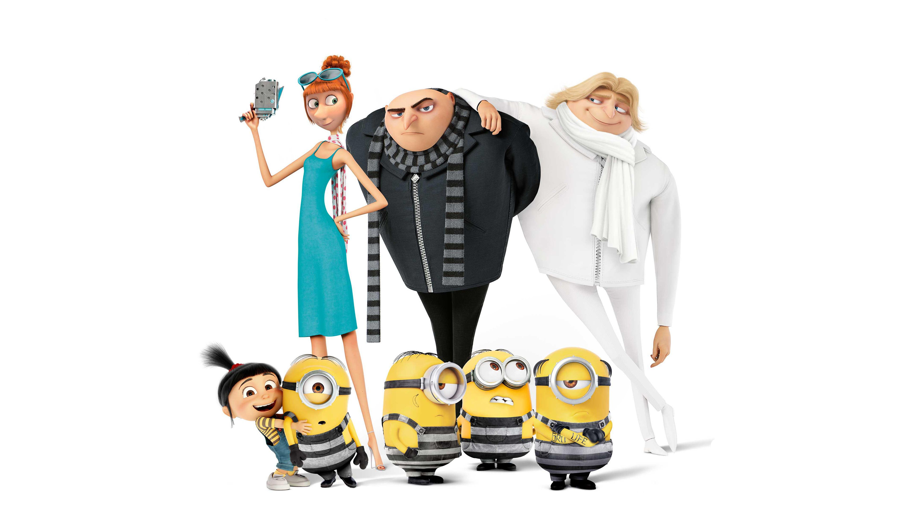

Mi Villano Favorito 394% de coincidencia 1 h 29 minGru trabaja ahora capturando villanos pero fracasa y es despedido. Poco después descubre que tiene un hermano, Dru, y juntos se enfrentan a un villano que pretende robar un diamante y destruir Hollywood. Sin embargo, Dru quiere convencer a Gru.REPRODUCIRTRAILERProtagonistas: Steve Carrell, Trey Parker, Keith Gamay. Genero: Infantil.